Muntej user journey
Muntej is an AI task assistant for managers and employees in companies. A manager says or types a task once. Muntej gives it to the right person, follows up, collects the proof and reports back.
- 1. ManagerSays a task. Muntej assigns it and plans the follow-ups.
- 2. EmployeeGets the task, updates it with one tap and sends it for review.
- 3. ManagerApproves requests and finished work, and reads the reports.
How to follow this journey in the app
- Open Muntej and type play-review@muntej.app, then tap Send code.
- Type the 6-digit code from the App Review Information. No email is needed.
- You are now Ahmed, the manager of Horizon Trading, a demo company with a sample team and tasks. The people in it are not real, and alerts to the sample team are off.
- To see the employee screens, open Settings → View the app as → Employee.
These screens come from the same demo company, captured at iPhone size from the app's web build. To change the language, open Settings → Language. The app is in English and Arabic, and Arabic reads right to left.
Where AI is used
The AI runs on our servers using OpenAI. Muntej uses it to:
- turn speech into text and understand a task: who, what and when;
- suggest the right person and split the task into steps;
- answer questions and act on requests in the chat;
- check proof attached to a task;
- find work asked of the user in the tools they choose to connect.
Each action Muntej takes is listed in Autopilot (step 12). Requests and finished work wait for the manager's decision (steps 10 and 11). There are no purchases or ads in the app. Our privacy policy explains how data is handled.
Part 1: The manager says a task
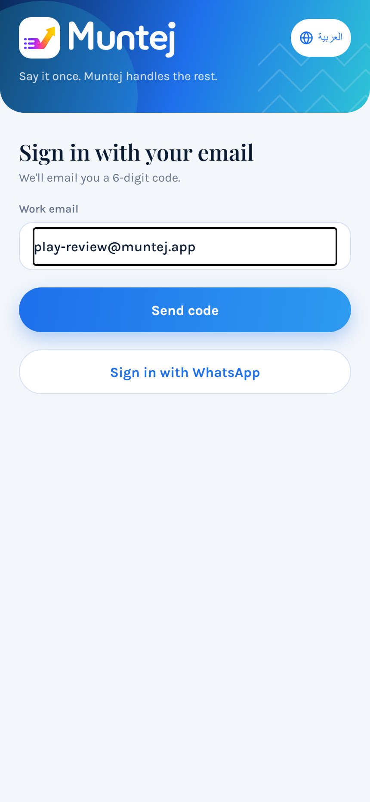
Sign in
Everyone signs in with their work email and a 6-digit code. There is no password to remember.
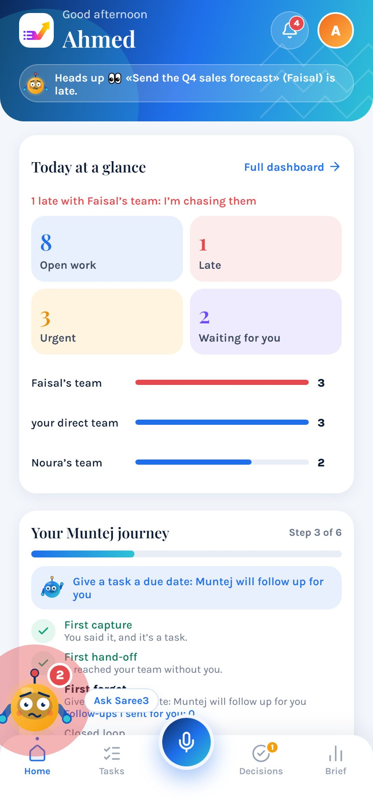
See the day at a glance
Home shows open, late and urgent work, what is waiting for the manager, and how each team is doing. The microphone in the middle starts a new task from any screen.
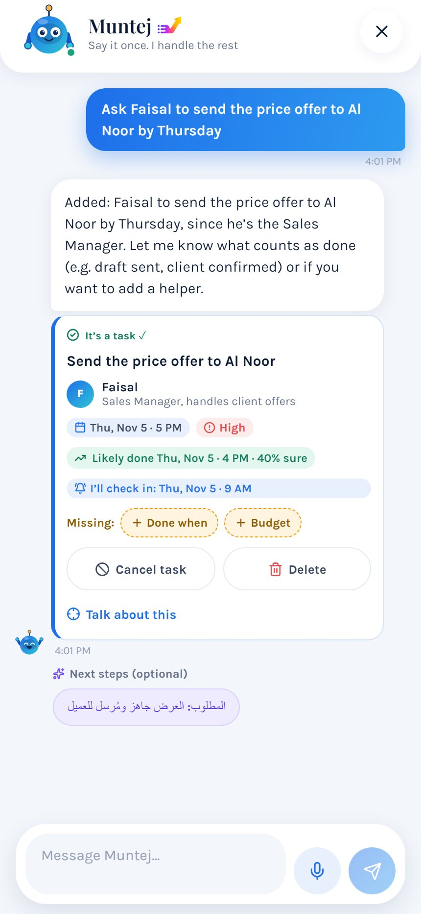
Say the task once
The manager says or types what is needed. Here it is typed: "Ask Faisal to send the price offer to Al Noor by Thursday". Muntej creates the task with its owner, due date and priority, and shows when it will check in. The manager can cancel or delete it from the same card.
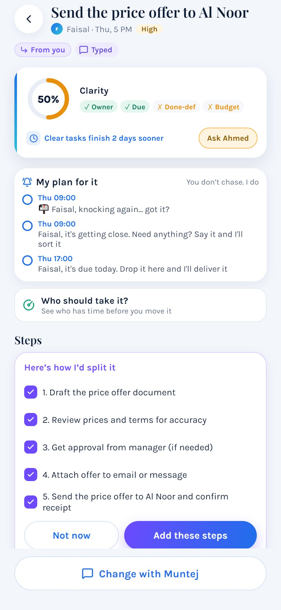
Muntej plans the follow-up
The task page shows who owns it, what is still unclear, and the dated reminders Muntej will send. It also suggests steps, which the manager can add or skip.
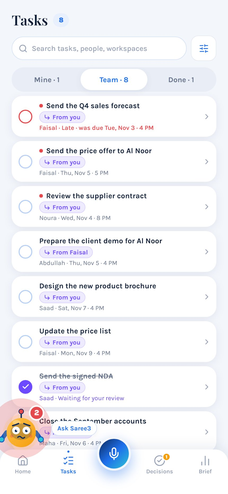
The task joins the team's list
Tasks has three tabs: the manager's own work, the team's work and finished work. Late tasks are marked in red. This is a list, not a project board, because Muntej does the chasing.
Part 2: The employee does the work
Faisal is an employee in the same demo company.
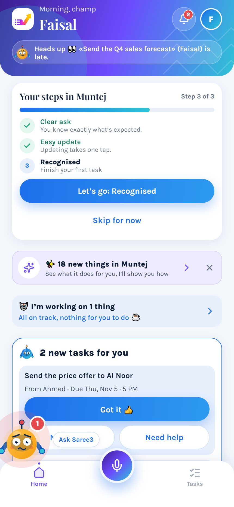
The new task arrives
Faisal sees what Ahmed asked for and when it is due. He can accept with Got it or tap Need help.
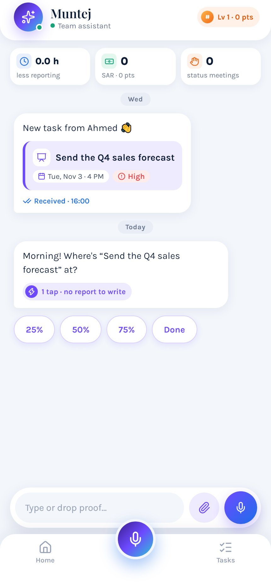
Update with one tap
Muntej asks how a task is going. Faisal taps 25%, 50%, 75% or Done, so nobody has to write a status report.
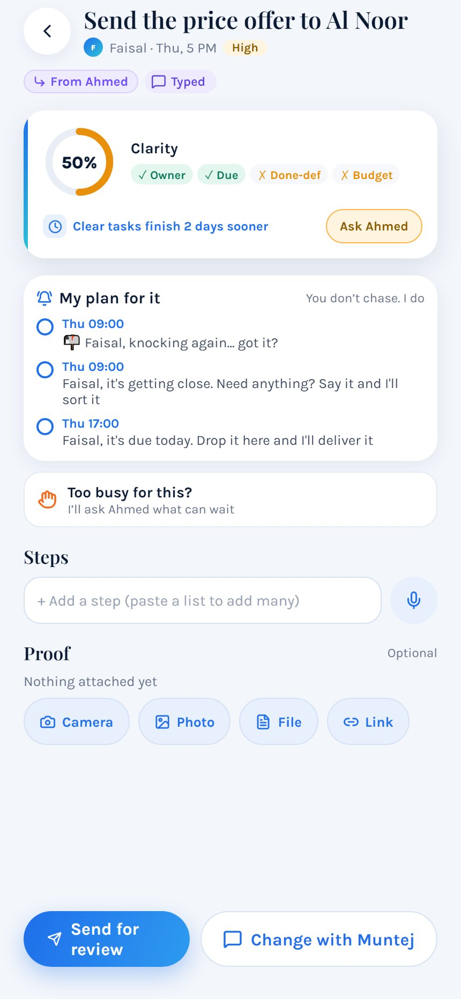
Work and attach proof
Faisal can add steps, attach optional proof from the camera, photos, a file or a link, say he is too busy, and send the work for review.
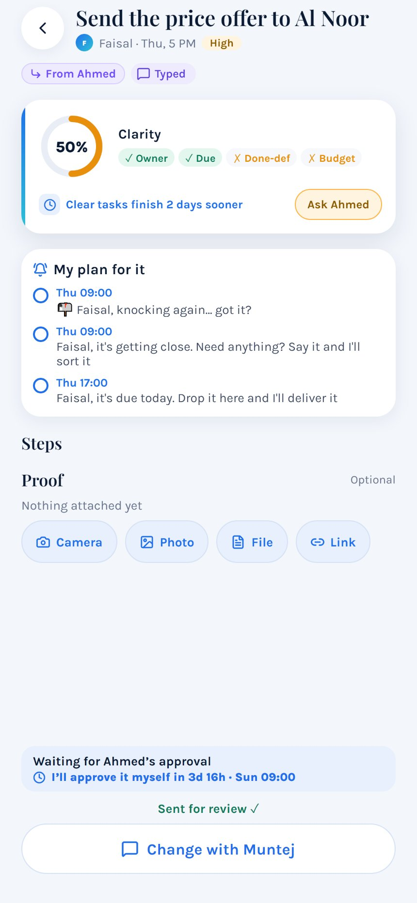
Send it for review
The task now waits for Ahmed. The countdown shows when Muntej will approve it by itself if Ahmed doesn't respond, so finished work doesn't stay stuck.
Part 3: The manager decides and gets the results
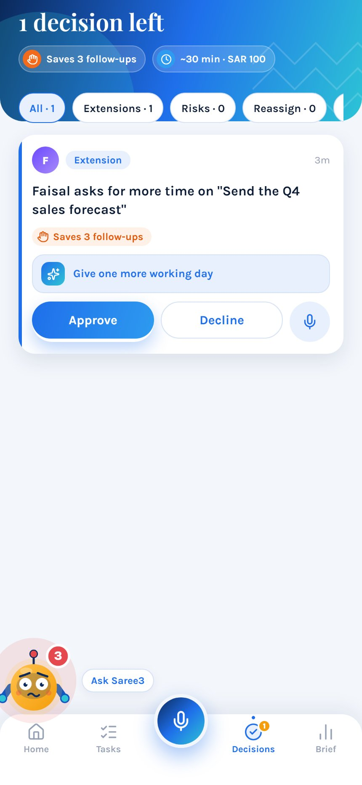
Decide only what needs a decision
Requests come here, such as Faisal asking for more time on another task. Muntej suggests an answer, and the manager taps Approve or Decline.
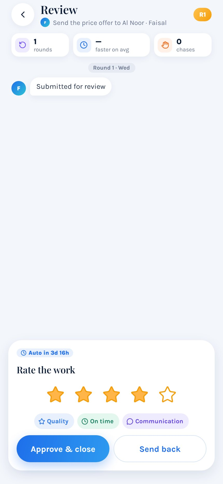
Review the finished work
The manager rates the work, then taps Approve & close or Send back. Sending it back returns the task to the employee.
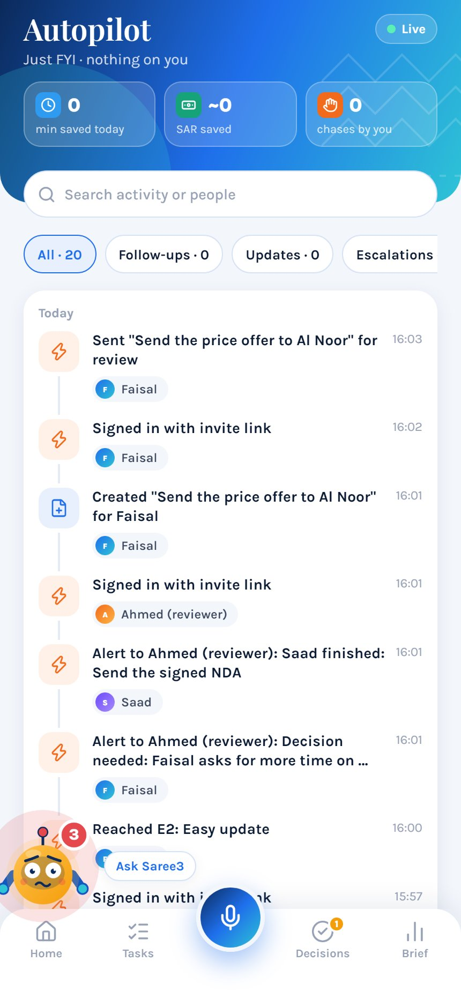
See everything Muntej did
Autopilot is a live record of what happened and who it concerned: tasks created, alerts and sign-ins. It can be searched and filtered.
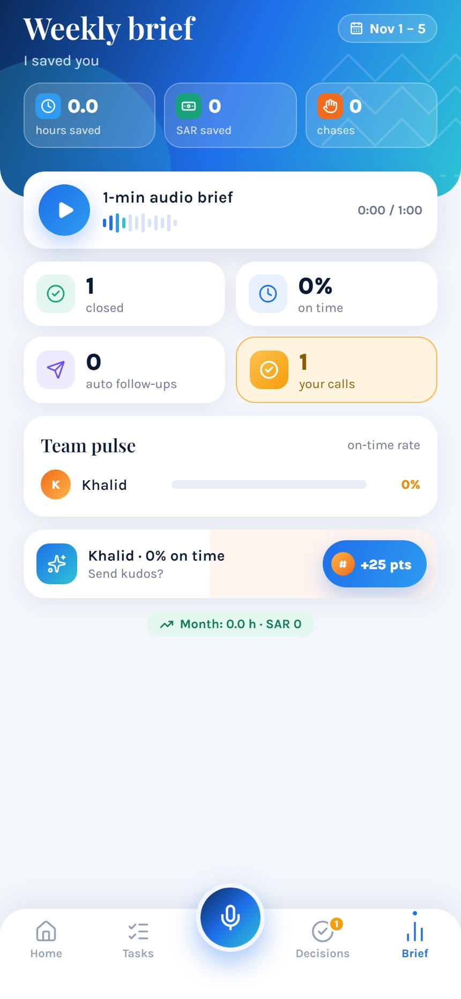
Read the weekly brief
The brief sums up the week: tasks closed, on-time rate, follow-ups sent and the team's pulse. It can also be played as a one-minute audio brief.
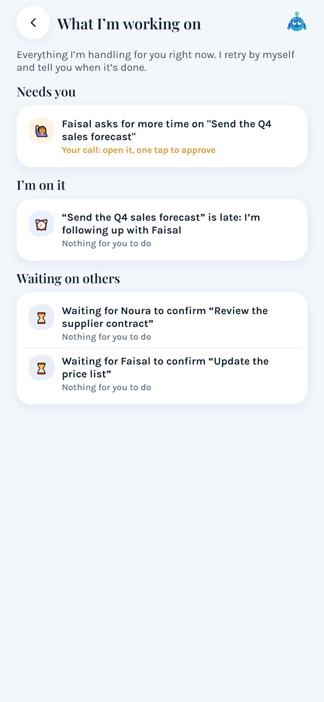
Ask what the assistant is working on
Saree3 is the name of Muntej's assistant. This screen separates what needs the manager, what Saree3 is handling, and what is waiting on other people.
Part 4: Team, tools and account
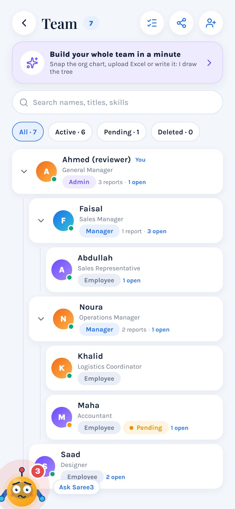
Build the team
The team is shown as a tree of who reports to whom. A manager can add people by hand or build the team from an org chart, a file or a written list, then invite them.
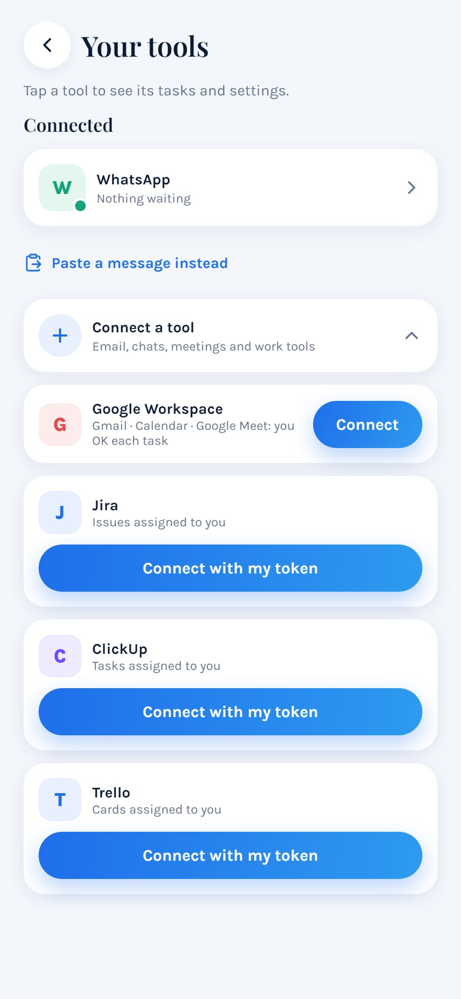
Connect work tools (optional)
A user can connect tools such as WhatsApp, Google Workspace, Jira, ClickUp or Trello, so work asked of them can become tasks. Nothing is connected unless the user chooses it. The app works without any of them.
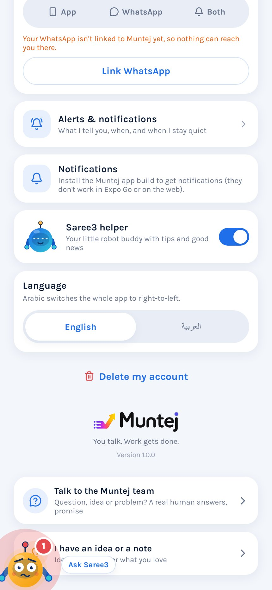
Settings and account deletion
Settings holds notifications, language and support. Team members delete their account here with Delete my account. This button is not shown to company admins, including the demo manager login. Admins can ask for deletion by emailing sales@muntej.app, as explained on the account deletion page.